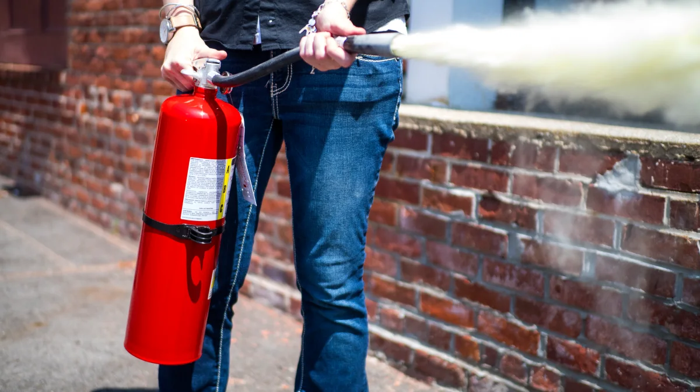

| Tips on how to prevent fire accidents | ||
|---|---|---|
 |
1. Turn off unused electronics | When you leave your room make sure you turn off every electronic device before leaving. It's optional to not unplug electronic devices if you are just going out to get something. Same goes before your leaving your house, make sure everything is fully off and plugged off, because if you don't, possible chance your house will be on fire |
|  | 2. Use a fire extinguisher | If there is fire onsight, find an fire extinguisher as soon as possible. If no fire extinguisher use baking soda. |